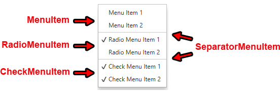
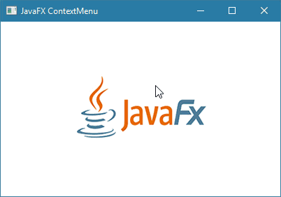

JavaFXالكلاس ContextMenu
مقدمة
الكلاس ContextMenu يستخدم للحصول على قائمة منبثقة ( Popup Menu ) تظهر عند النقر على زر الفأرة الأيمن ( Right Click ).
ملاحظة: ليس بالضرورة أن تظهر القائمة فقط عند النقر على زر الفأرة الأيمن, لكنك على الأغلب لن تحتاج إظهارها إلا عند النقر على زر الفأرة الأيمن.
في الـ ContextMenu يمكنك وضع أي نوع من العناصر ( Menu Items ) التالية بداخلها:
Menu: أي قائمة داخلية, حيث يمكنك أن تضع قائمة بداخل قائمة.
MenuItem: عنصر عادي خاص للقوائم.
RadioMenuItem: يمثل RadioButton خاص للقوائم.
CheckMenuItem: يمثل CheckBox خاص للقوائم.
SeparatorMenuItem: يمثل خط فاصل (Separator) خاص للقوائم.
CustomMenuItem: عبارة عن كلاس خاص يجب أن يرث منه أي كلاس تنشئه أنت بهدف وضعه كعنصر في القائمة.
مثال
الصورة التالية عبارة عن ContextMenu تحتوي على إثنين ContextMenu, إثنين RadioMenuItem, إثنين CheckMenuItem و إثنين SeparatorMenuItem.

لعلك تتسائل ما الفرق بين الـ RadioMenuItem و الـ CheckMenuItem لأنهما يعطيانك نفس الشكل!
الفرق بينهما أنك تستطيع وضع الـ RadioMenuItem ضمن مجموعة مثل الـ RadioButton تماماً لجعل المستخدم قادر على إختيار عنصر واحد فقط كما سبق أن شرحنا في درس الـ RadioButton.
بناء الكلاس ContextMenu
@IDProperty(value="id")
public class ContextMenu
extends PopupControl
كونستركتورات الكلاس ContextMenu
الجدول التالي يحتوي على كونستركتورات الكلاس ContextMenu.
| الكونستركتور مع تعريفه |
public ContextMenu()
ينشئ كائن من الكلاس ContextMenu يمثل قائمة فارغة, أي لا تحتوي أي عنصر.
لإضافة خيارات فيها نستدعي الدالة getItems() التي تسمح للوصول لعناصرها و من ثم نستدعي الدالة add() أو addAll() لإضافة عناصر فيها كالتالي.
contextMenuObject.getItems().add( item );
contextMenuObject.getItems().addAll( item1, item2.. );
|
public ContextMenu(MenuItem... items)
ينشئ كائن من الكلاس ContextMenu يمثل قائمة تحتوي على عناصر.
مكان الباراميتر items يمكنك أن تمرر العدد الذي تريده من الكائنات التي ترث من الكلاس MenuItem مع وضع فاصلة بين كل إثنين. هذه العناصر ستظهر كعناصر في القائمة. |
دوال الكلاس ContextMenu
الجدول التالي يحتوي على دوال الكلاس ContextMenu الأكثر إستخداماً.
| الدالة مع تعريفها |
public void show(Node anchor, double screenX, double screenY)
تستخدم لإظهار القائمة التي يمثلها كائن الـ ContextMenu الذي قام باستدعائها في الموقع الذي تم تحديده.
مكان الباراميتر anchor نضع إسم الكائن الذي سنظهر القائمة من أجله, و الذي أعددنا القائمة له من الأساس. مكان الباراميتر screenX نضع رقم بالبيكسل يمثل بعد القائمة أفقياً عن المكان الذي تم النقر عليه. مكان الباراميتر screenY نضع رقم بالبيكسل يمثل بعد القائمة عامودياً عن المكان الذي تم النقر عليه.
|
public final void setStyle(String value)
تستخدم لتعديل تصميم كائن الـ ContextMenu الذي قام بإستدعائها.
مكان الباراميتر value يمكنك تمرير إسم و قيمة أي خاصية تريد تعديلها في كائن الـ ContextMenu بأسلوب لغة CSS لإظهاره بالشكل الذي تريده. |
مثال شامل
المثال التالي يعلمك طريقة إنشاء كائن من الكلاس ContextMenu يمثل قائمة تظهر عند النقر على زر الفأرة الأيمن ( Right Click ).
هذه القائمة تسمح للمستخدم بقلب الصورة يميناً و يساراً, إظهار خط حولها, تحديد لون الخط, إخفاء الخط.

شاهد المثال »
ملاحظة
سبق أن إستخدمنا الـ ContextMenu أيضاً ضمن المثال الثالث الموضوع في درس الـ TreeView.
لذلك يمكنك مشاهدة ذلك المثال لأخذ مزيد من الأفكار حول كيفية الإستفادة من هذا الكلاس في التطبيقات التي قد تنشئها بنفسك في المستقبل.

 محرر الويب
محرر الويب نظام الألوان
نظام الألوان محول الوحدات
محول الوحدات محلل عناوين الشبكات
محلل عناوين الشبكات